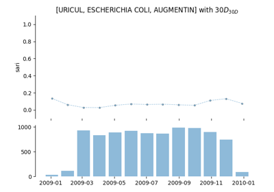

Tutorials
Guide step by step
Outline of the process and steps required to compute various metrics.


Step 02 - Temporal evolution


Computing AMR metrics
Examples with the most important metrics.


Collateral Sensitivity Index (ACSI)
Collateral Sensitivity Index (``ACSI``)
Metrics
Examples computing metrics.


Time-series analysis (regression)
Examples using regression and time-series analysis.
Using Theil-Sen estimator


Using the statistical tests wrappers
Examples using some wrappers implemented to compute statistical tests.